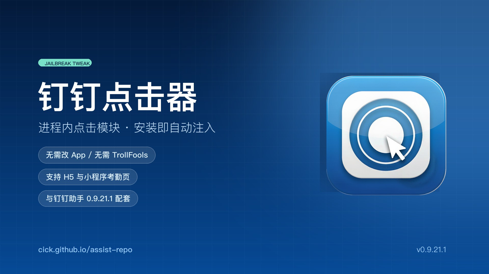

这个包是「钉钉助手」的点击器部分单独打包，供替换 / 调试使用。 安装后由 MobileSubstrate 在钉钉启动时自动注入，不需要改钉钉 IPA、不需要 TrollFools。
它做什么
- 接收调度器写在
<钉钉沙盒>/Documents/DTA/dta_cmd.plist的指令 - 自动切到「工作台 → 考勤打卡」，找到圆形打卡按钮并点下去
- 兼容原生、H5、小程序考勤页（注入 JS + 真实触点）
- 点中后立即冻结，并把结果写回
dta_status.plist
必须与助手同版本
本包版本 0.9.21.4，与「钉钉助手 0.9.21.1」的握手协议一一对应。 把旧版本（0.9.18 及更早）单独装到这个助手上是收不到指令的 —— 旧版还在用 CFPreferences 读偏好， 而钉钉沙盒读不到别的域。
关于「风险插件」提示
钉钉打卡时会枚举进程里加载的 dylib，并检查 MobileSubstrate 目录，发现第三方注入就提示
「疑似安装风险插件进行虚拟打卡」。0.9.21.2 起包内多了一个只注入钉钉的隐藏模块，
钉钉既看不到注入镜像的路径，也读不到 MobileSubstrate 目录内容。
安装
1. 在 Sileo / Zebra 添加源 https://cick.github.io/assist-repo/
2. 安装本包（会覆盖「钉钉助手」里同路径的点击器，版本一致则无影响）
3. 把钉钉上滑彻底关闭再打开，让模块重新加载
说明：本模块为逆向学习产物，仅供个人研究使用。平时只需要装「钉钉助手」，
它自带同版本点击器，不必单独安装本包。